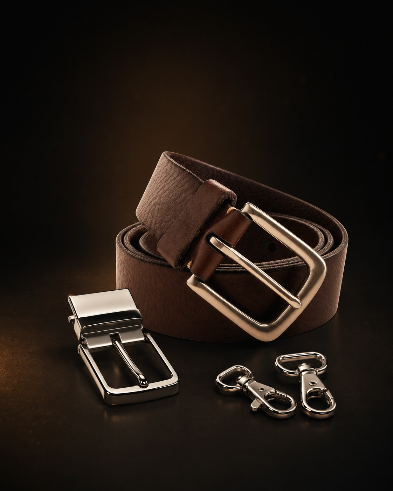
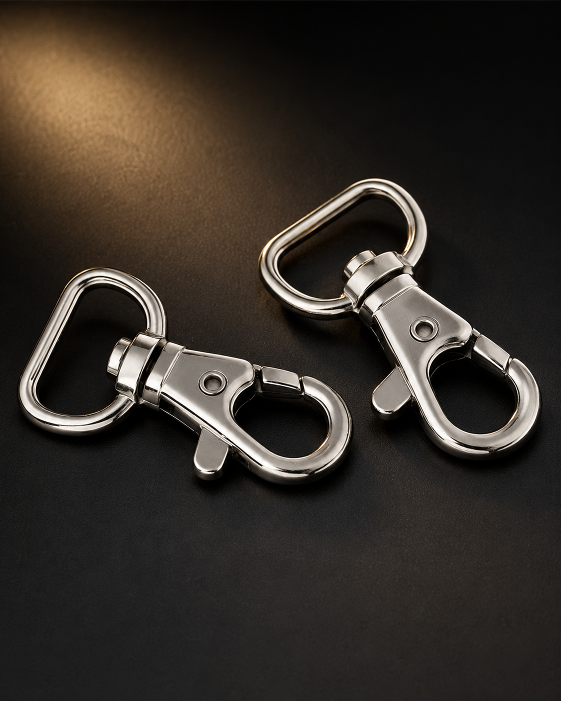
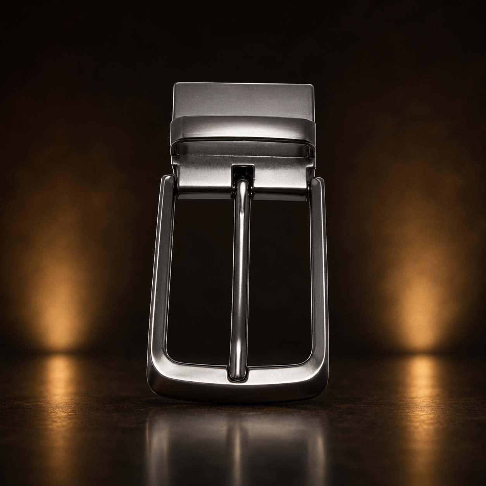
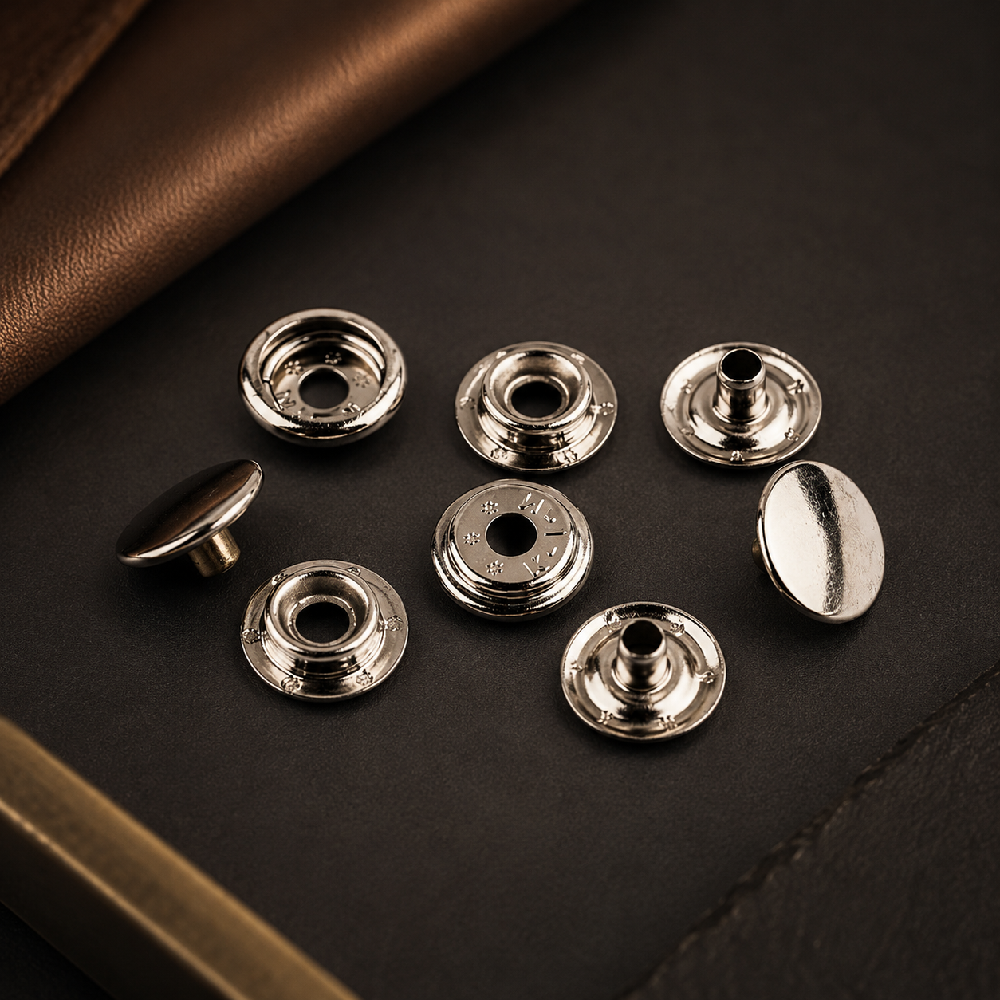
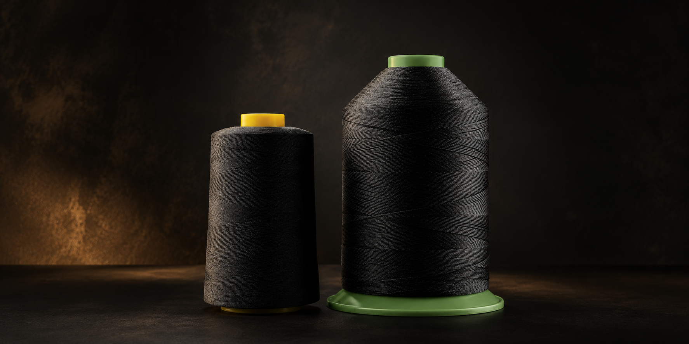

Herrajes y hebillas
Hebillas reforzadas, hebillas para cincho, hebillas reversibles, medias argollas, argollas, argollas para llavero y accesorios metálicos para acabados resistentes.
En Peletería Continental encontrás insumos para marroquinería, tapicería, encuadernación, calzado y trabajos artesanales. Contamos con hebillas, ojetes, remaches, broches, hilos, pegamentos, cuerinas, cuero para cinchos, alfombras tipo piso y envíos por Guatex.

Contamos con materiales e insumos para marroquinería, tapicería, encuadernación, calzado, alfombras y trabajos artesanales.
Hebillas reforzadas, hebillas para cincho, hebillas reversibles, medias argollas, argollas, argollas para llavero y accesorios metálicos para acabados resistentes.
Ojetes para calzado y lona, remaches de diferentes tamaños, broches en general y tornillos para trabajos de marroquinería, lona, cuero y encuadernación.
Hilos para coser a mano, hilos para máquina, agujas capoteras, agujas curvas y lesnas para trabajos artesanales y profesionales.
Pegamento amarillo, pegamento blanco y pegamentos para encuadernación, ideales para diferentes tipos de materiales y acabados.
Cuerinas para tapicería, esponjas, hules y alfombras tipo piso, incluyendo estilos como tachón, espiga y otros acabados.
Cuero para cinchos en color café, negro y gena, además de cinchos de cuero ya elaborados y listos para la venta.
Percalinas, pegamentos, tornillos y materiales utilizados para trabajos de encuadernación, presentación y acabados personalizados.
Realizamos envíos por Guatex para que podás recibir tus materiales de forma práctica según disponibilidad y ubicación.
Peletería Continental se especializa en la venta de materiales, insumos y accesorios para marroquinería, tapicería, encuadernación, calzado y trabajos artesanales.
Nuestro objetivo es ofrecer variedad, buena atención y productos útiles para clientes que trabajan con cuero, cuerina, lona, hilos, herrajes, pegamentos y materiales de acabado.
Ofrecemos productos para clientes particulares, talleres, artesanos, emprendedores y negocios que necesitan insumos resistentes y de buena presentación.
Hebillas, argollas, medias argollas, broches, remaches, cuero para cinchos, hilos, lesnas y accesorios para trabajos en cuero o cuerina.
Cuerinas, esponjas, hules y materiales útiles para reparación, fabricación o personalización de muebles, forros y acabados.
Percalinas, pegamentos, tornillos y materiales para trabajos de presentación, encuadernado y acabados profesionales.
Ojetes, pegamentos, hebillas, hilos, agujas y accesorios para reparación o fabricación de calzado, lona y productos relacionados.
Alfombras y materiales tipo tachón, espiga y otros estilos para piso, protección, uso comercial o trabajos personalizados.
Atendemos consultas de disponibilidad y realizamos envíos por Guatex para facilitar la compra de materiales fuera del área.
Conocé algunos de los materiales, herrajes y accesorios que ofrecemos para marroquinería, tapicería, encuadernación y trabajos artesanales..




Escribinos para consultar disponibilidad de hebillas, ojetes, remaches, broches, cuerinas, hilos, pegamentos, cuero para cinchos, alfombras y más productos.
Contactanos para consultar productos, precios, disponibilidad o pedidos. Atendemos materiales para marroquinería, tapicería, encuadernación, calzado, alfombras y trabajos artesanales.
Estamos ubicados en la 18 calle, 10-65 zona 1 de Guatemala. Cerca de la Plaza Barrios y Fegua, en el corazón de la ciudad.